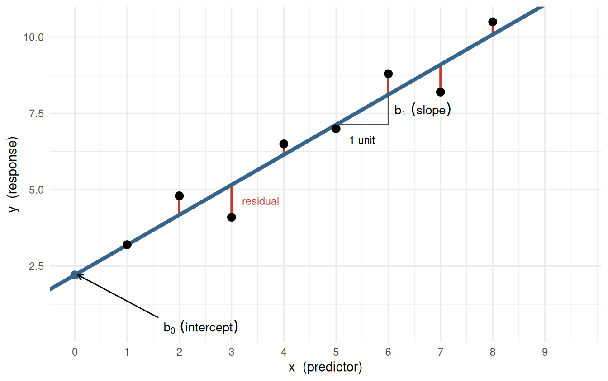
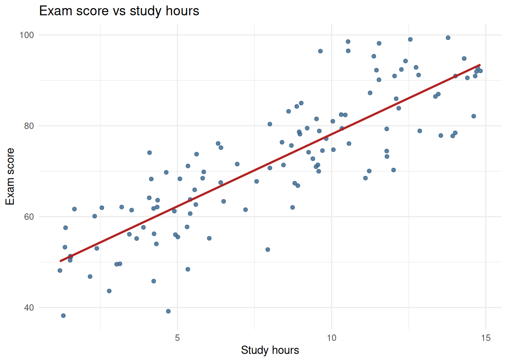
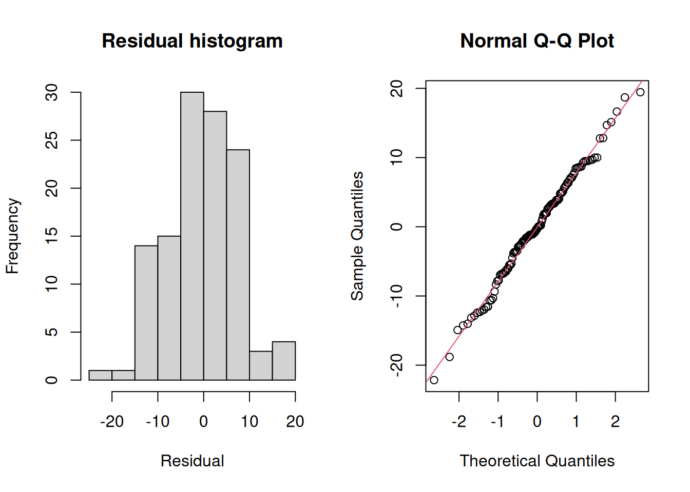
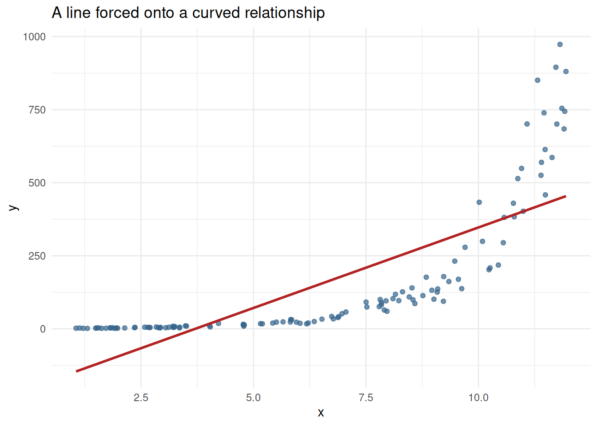
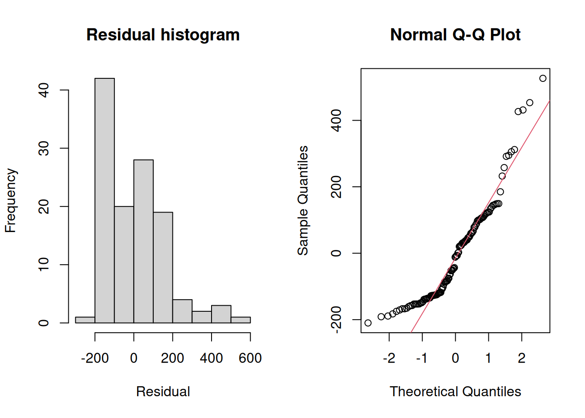

Module 5, Read 1
Simple linear regression: building, assessing and using
Module 5, Read 1: Simple linear regression
Project: Project 5, Looking Ahead · Preview: Read 0 · Prerequisite: Module 3 scatterplots & correlation · Next: Quiz A,
This reading is your self-paced textbook for Module 5. In Read 0 you reviewed how to read a scatterplot and summarize a linear trend with Pearson \(r\). Here you will work through three stages: Build a fitted line, Assess whether it is trustworthy and how well it predicts, and Use it to test the relationship and attach honest intervals to your predictions, the complete conceptual toolkit for Project 5.
Learning outcomes
Work through the three sections below, taking notes and using the Check yourself box at the end of each before Quiz A.
After this reading you should be able to:
Build:
- Motivate the least-squares line and know that the slope \(b_1\) and intercept \(b_0\) can be by hand (and recognize the matrix form).
- Fit a simple linear regression with
lm(), interpret slope and intercept in context, write the prediction equation, and make a point prediction by hand and from the R output.
Assess:
- State the conditions for trusting regression /
cor.testinference: independent observations, linear form, and approximately normal residuals with constant spread. - Interpret \(R^2\) and MSE in context for a given dataset.
- Explain why \(R^2\) and MSE are optimistic on the training data and should be judged on a test set or by using cross-validation.
Use:
- Test whether the slope \(\beta_1\) (equivalently, the correlation \(\rho\)) differs from zero using
summary(lm())andcor.test(), and explain why these give the same p-value in simple regression. - Interpret a confidence interval for the slope, a confidence interval for the mean response at \(x_0\), and a prediction interval for an individual at \(x_0\), and explain why the PI is wider.
Optional:
- (Optional) Recognize simple logistic regression for a binary response and the idea of multiple regression.
1. Build the model
Goal: turn a roughly linear scatterplot into a fitted equation you can read, interpret, and plug numbers into.
From scatterplot to a fitted line
Every simple linear regression has two variables in fixed roles:
- The response \(y\) (also called the outcome or dependent variable) is the thing you want to predict.
- The predictor \(x\) (also called the explanatory or independent variable) is the thing you predict it from.
When a scatterplot of the response \(y\) against the predictor \(x\) looks roughly linear, we summarize the trend with a straight line:
\[\hat{y} = b_0 + b_1 x\]
where \(b_1\) is the slope (predicted change in \(y\) for a one-unit increase in \(x\)) and \(b_0\) is the intercept (predicted \(y\) when \(x = 0\)). The hat on \(\hat{y}\) signals a prediction, not an observed value. For example, if \(y\) is the height of my sunflower, then \(\hat{y}\) is the predicted height of my sunflower.
NotePrediction is not the same as estimation
These sound alike but are different goals, and statistics keeps them separate:
- Estimation pins down a fixed unknown quantity for a whole group: a parameter such as the slope \(\beta_1\), or the mean response (the average \(y\)) at a given \(x\). An estimate is reported with a confidence interval.
- Prediction guesses the value of one new individual observation, a single future \(y\). A prediction is reported with a prediction interval.
Why “least squares”?
For any candidate line, each point has a residual, the vertical miss between what we observed and what the line predicts:
\[e_i = y_i - \hat{y}_i.\]
A line that fits well makes these residuals small. The standard choice is to minimize the sum of squared residuals \(\sum e_i^2\). Squaring keeps the positive and negative misses from cancelling, penalizes big misses more, and yields “nice” formulas for people without computers. The minimizing line is the least-squares regression line.
The picture below ties the pieces together: the data, the fitted line, the residuals it leaves behind, and where the intercept \(b_0\) and slope \(b_1\) live.
Optional activity: visualize best-fit line choices, drag a line and watch the squared error change.
Notation: the population truth vs your sample
Statistics keeps two layers separate, and the symbols tell you which layer you are on.
- Greek letters are the unknown population truths we wish we knew. The theoretical model for the whole population is \[Y = \beta_0 + \beta_1 X + \varepsilon,\] where \(\beta_0, \beta_1\) are the true intercept and slope, \(\rho\) is the true correlation, and \(\varepsilon\) (epsilon) is the random error: how far an individual falls from the true line.
- Latin letters are what we actually compute from one sample to estimate those truths. Fitting a line gives \[\hat{y} = b_0 + b_1 x,\] where \(b_0, b_1\) estimate \(\beta_0, \beta_1\), the sample correlation \(r\) estimates \(\rho\), and the residual \(e_i = y_i - \hat{y}_i\) is our observed stand-in for the unseen error \(\varepsilon_i\).
- Capitals vs lowercase mark random variable vs observed value. \(X\) and \(Y\) are random variables (the population-level, “could be anything” quantities); \(x_i\) and \(y_i\) are the specific numbers you actually recorded for case \(i\).
- A hat means “estimated from data.” So \(\hat{y}\) is a predicted value, and you will sometimes see \(\hat{\beta}_1\) written for what we call \(b_1\).
| Quantity | Population (truth) | Sample (your data) |
|---|---|---|
| Intercept | \(\beta_0\) | \(b_0\) |
| Slope | \(\beta_1\) | \(b_1\) |
| Correlation | \(\rho\) | \(r\) |
| Error / residual | \(\varepsilon_i\) | \(e_i\) |
| Variable | \(X,\ Y\) (random variables) | \(x_i,\ y_i\) (observed values) |
The whole point of the rest of this reading: use the sample quantities (\(b_0, b_1, r, e_i\)) to learn about the population quantities (\(\beta_0, \beta_1, \rho\)) we cannot see directly.
The by-hand formulas
Minimizing the total squared residual for a dataset over every possible line gives “nice” formulas for the slope and intercept (the box below shows where they come from):
\[ b_1 = \frac{\sum_{i=1}^n (x_i - \bar{x})(y_i - \bar{y})}{\sum_{i=1}^n (x_i - \bar{x})^2} = r \,\frac{s_y}{s_x}, \qquad b_0 = \bar{y} - b_1 \bar{x}. \]
Two things worth noticing:
- \(r\) is Pearson’s correlation and \(s_x\) and \(s_y\) are the standard deviations (spreads) of the variables so multiplying by their ratio puts the right units back on to correlation, giving a measure of the steepness of the linear form rather than the strength without units.
- The slope is just the correlation rescaled by the spreads \(s_y/s_x\). So \(b_1\) and \(r\) always share the same sign, a positive correlation means an upward line.
- Because \(b_0 = \bar{y} - b_1\bar{x}\), the line always passes through the point of averages \((\bar{x}, \bar{y})\).
NoteOptional, where these formulas come from (no calculus)
The only fact we need is from algebra: an upward-opening parabola \(f(t) = A t^2 + B t + C\) with \(A > 0\) has its lowest point (its vertex) at \(t = -\,\dfrac{B}{2A}\).
Step 1, the intercept. Hold the slope \(b_1\) fixed and view the total squared residual as a function of \(b_0\) only. Each residual is \(y_i - b_1 x_i - b_0\), and squaring and adding gives
\[\text{SSE}(b_0) = n\,b_0^2 \;-\; 2\Big(\textstyle\sum (y_i - b_1 x_i)\Big) b_0 \;+\; (\text{a constant}),\]
a parabola in \(b_0\) with \(A = n\). Its vertex sits at \(b_0 = \dfrac{\sum (y_i - b_1 x_i)}{n} = \bar{y} - b_1 \bar{x}\), so the best line always passes through \((\bar{x}, \bar{y})\).
Step 2, the slope. Substitute that intercept, which rewrites each residual as \((y_i - \bar{y}) - b_1 (x_i - \bar{x})\). As a function of \(b_1\) only,
\[\text{SSE}(b_1) = \Big(\textstyle\sum (x_i - \bar{x})^2\Big) b_1^2 \;-\; 2\Big(\textstyle\sum (x_i - \bar{x})(y_i - \bar{y})\Big) b_1 \;+\; (\text{a constant}),\]
a parabola in \(b_1\) with \(A = \sum (x_i - \bar{x})^2\). Its vertex sits at
\[b_1 = \frac{\sum (x_i - \bar{x})(y_i - \bar{y})}{\sum (x_i - \bar{x})^2},\]
exactly the slope formula above. By minimizing the sum of squared residuals, we avoid Calculus and derivatives and just use “the bottom of a parabola sits at \(-B/(2A)\).”
NoteOptional aside, the matrix form
Every linear model can be written \(\mathbf{y} = \mathbf{X}\beta + \varepsilon\), where \(\mathbf{X}\) stacks a column of 1s (for the intercept) next to the predictor column. The least-squares solution is
\[\hat{\beta} = (\mathbf{X}^\top \mathbf{X})^{-1}\mathbf{X}^\top \mathbf{y}.\]
This single expression returns \(b_0\) and \(b_1\) for simple regression, and, with more predictor columns, all the coefficients of multiple regression (the STAT 333 preview at the end). You never have to compute it by hand; lm() does it for you. It is shown only so the formula looks familiar later.
See it once: by hand and with R
Unless you get stuck on a desert island, you probably won’t compute the slope and intercept by hand. Their formulas can be computed by hand but R does it quickly and accurately. Here is a tiny dataset so you can see what the calculations would look like and to match them up with the R output. Let’s take five points and build the pieces the slope formula needs:
| \(x\) | \(y\) | \(x - \bar{x}\) | \(y - \bar{y}\) | \((x-\bar{x})(y-\bar{y})\) | \((x-\bar{x})^2\) |
|---|---|---|---|---|---|
| 1 | 3 | \(-2\) | \(-3\) | 6 | 4 |
| 2 | 5 | \(-1\) | \(-1\) | 1 | 1 |
| 3 | 4 | 0 | \(-2\) | 0 | 0 |
| 4 | 8 | 1 | 2 | 2 | 1 |
| 5 | 10 | 2 | 4 | 8 | 4 |
Here \(\bar{x} = 3\) and \(\bar{y} = 6\). Listing every term in the formula, the slope is the sum of the fifth column over the sum of the sixth:
\[ b_1 = \frac{6 + 1 + 0 + 2 + 8}{4 + 1 + 0 + 1 + 4} = \frac{17}{10} = 1.7 , \]
and the intercept follows from the point of averages:
\[ b_0 = \bar{y} - b_1\bar{x} = 6 - (1.7)(3) = 6 - 5.1 = 0.9 . \]
So the fitted line is \(\hat{y} = 0.9 + 1.7x\). Now fit the very same five points with R:
Code
demo <- data.frame(x = c(1, 2, 3, 4, 5),
y = c(3, 5, 4, 8, 10))
lm(y ~ x, data = demo)
Call:
lm(formula = y ~ x, data = demo)
Coefficients:
(Intercept) x
0.9 1.7 Find your two hand numbers in the output: the value printed under (Intercept) is the intercept \(b_0 = 0.9\), and the value under x is the slope \(b_1 = 1.7\). Same answer, two routes.
The running example: study hours and exam score
In the rest of this reading we use a larger, more realistic dataset of 120 students, study hours and exam score:
Code
library(tidyverse)
set.seed(3401)
n <- 120
exam_dat <- tibble(
study_hours = runif(n, 1, 15),
exam_score = 45 + 3.4 * study_hours + rnorm(n, 0, 8)
)First confirm the form is linear (so a line is appropriate model):
Code
ggplot(exam_dat, aes(x = study_hours, y = exam_score)) +
geom_point(alpha = 0.8, color = "steelblue4") +
geom_smooth(method = "lm", se = FALSE, color = "firebrick") +
labs(title = "Exam score vs study hours",
x = "Study hours", y = "Exam score") +
theme_minimal()
With a linear trend confirmed, let R compute the same sums for all 120 points and return the slope and intercept:
Code
fit_exam <- lm(exam_score ~ study_hours, data = exam_dat)
fit_exam
Call:
lm(formula = exam_score ~ study_hours, data = exam_dat)
Coefficients:
(Intercept) study_hours
46.400 3.174 Interpret the slope and intercept
- Slope: each additional hour of study is associated with a predicted increase of about 3.17 points.
- Intercept: the predicted score at 0 study hours is about 46.4 points (an extrapolation outside the data, interpret with care).
Write and use the equation
Read \(b_0\) and \(b_1\) from the R output and write the prediction equation, \(\hat{y} = b_0 + b_1 x\). A point prediction plugs an \(x\) value into the equation, either by hand or with predict():
Code
predict(fit_exam, newdata = tibble(study_hours = 10)) 1
78.14102
NoteThe best single guess is the mean
There is a clean theory behind this one number. If you must commit to a single value as your guess for a quantity and you are judged by squared error (the same yardstick least squares uses), the guess that minimizes your average squared miss is the mean: \(E[(Y - c)^2] = \operatorname{Var}(Y) + (E[Y] - c)^2\) is smallest exactly at \(c = E[Y]\). With a predictor \(x\) in hand, that becomes the mean of \(y\) at that \(x\), the conditional mean \(E[Y \mid x]\), which is exactly what the regression line estimates. So the fitted value \(\hat{y}\) does double duty: it is our estimate of the average \(y\) at \(x_0\) and, at the same time, our single best prediction for one new individual at \(x_0\). That is why the mean-response interval and the prediction interval in Section 3 are centered on the same number, they differ only in width. (Switch the yardstick to absolute error and the best single guess becomes the median instead, which is part of why least squares and the mean go together.)
Click to reveal answers
- The sum of the squared residuals \(\sum (y_i - \hat{y}_i)^2\). No other line gives a smaller total squared vertical miss; this is the criterion
lm()solves. - Read directly from the output: \(\hat{y} = 57.6 + 1.8x\). Slope: each additional study hour is associated with a predicted increase of about 1.8 exam-score points.
- \(\hat{y} = 57.6 + 1.8(10) = 75.6\). Residual \(= y - \hat{y} = 90 - 75.6 = 14.4\) (observed 14.4 above the line).
2. Assess the model
Goal: decide whether the fitted line is trustworthy and how accurate its predictions are. Do this before you quote any p-value or interval in Section 3.
Conditions for trusting inference
The slope/correlation test and every interval in Section 3 rely on conditions. Check them before quoting a p-value or interval built on the model:
- Linear form. The scatterplot trend is straight, not curved. (A p-value for a line fitted to a curve is meaningless.)
- Independent observations. Each row is a separate unit; no repeated measures on the same subject, no time-ordered dependence, no matched pairs.
- Approximately normal residuals with constant spread. The residuals scatter symmetrically around 0 with roughly equal variance across \(x\) (no funnel shape). This is what justifies the \(t\)-distribution behind the p-value and intervals.
Quick visual checks of the residuals from the exam model, where the conditions hold:
Code
par(mfrow = c(1, 2))
hist(residuals(fit_exam), main = "Residual histogram", xlab = "Residual")
qqnorm(residuals(fit_exam)); qqline(residuals(fit_exam), col = 2)
Code
par(mfrow = c(1, 1))A roughly bell-shaped histogram and points hugging the Q–Q line support the normality condition. A clear funnel in a residuals-vs-\(x\) plot would signal non-constant spread and unreliable inference.
What it looks like when a condition fails
Diagnostics earn their keep when something is wrong. Here a straight line is forced onto a clearly curved relationship:
Code
set.seed(3405)
curved <- tibble(
x = runif(120, 1, 12),
y = exp(0.55 * x + rnorm(120, 0, 0.25))
)
ggplot(curved, aes(x, y)) +
geom_point(alpha = 0.7, color = "steelblue4") +
geom_smooth(method = "lm", se = FALSE, color = "firebrick") +
labs(title = "A line forced onto a curved relationship",
x = "x", y = "y") +
theme_minimal()
The line cannot follow the curve: it runs above the points through the middle and far below them at the right. That structure leaks straight into the residuals:
Code
fit_curved <- lm(y ~ x, data = curved)
par(mfrow = c(1, 2))
hist(residuals(fit_curved), main = "Residual histogram", xlab = "Residual")
qqnorm(residuals(fit_curved)); qqline(residuals(fit_curved), col = 2)
Code
par(mfrow = c(1, 1))Now the histogram is sharply right-skewed instead of bell-shaped, and the Q–Q points swing far off the line in a pronounced curve. Both say the normal-residual condition fails, so the slope p-value and the intervals here are not trustworthy. The fix is not to quote the p-value anyway; it is to go back and model the curve (transform \(y\) or add a curved term, a topic for the second course). For Project 5, the practical takeaway is simpler: confirm your scatterplot looks straight before you fit a line.
How good is the prediction? Judge it on new data
Two common summaries of fit:
- Mean squared error (MSE): \(\frac{1}{n}\sum (y_i - \hat{y}_i)^2\), the average squared prediction miss (in squared \(y\)-units).
- \(R^2\): the proportion of variation in \(y\) explained by the line, \(R^2 = 1 - \frac{\sum (y_i - \hat{y}_i)^2}{\sum (y_i - \bar{y})^2}\), between 0 and 1.
WarningThe optimism trap
If you compute MSE or \(R^2\) on the same data you used to fit the line, the numbers are optimistically biased, the line was tuned to those exact points, so it looks better than it will on anything new. Training error always understates real prediction error. To estimate how the model performs on new cases, evaluate it on data it has not seen.
Train/test split
Hold out a random slice of the data, fit on the rest, and score on the held-out part:
Code
set.seed(3402)
idx_train <- sample(seq_len(nrow(exam_dat)), size = 0.8 * nrow(exam_dat))
exam_train <- exam_dat[idx_train, ]
exam_test <- exam_dat[-idx_train, ]
fit_train <- lm(exam_score ~ study_hours, data = exam_train)
mse <- function(y, yhat) mean((y - yhat)^2)
r2 <- function(y, yhat) 1 - sum((y - yhat)^2) / sum((y - mean(y))^2)
train_pred <- predict(fit_train, newdata = exam_train)
test_pred <- predict(fit_train, newdata = exam_test)
tibble(
set = c("train", "test"),
MSE = c(mse(exam_train$exam_score, train_pred), mse(exam_test$exam_score, test_pred)),
R2 = c(r2(exam_train$exam_score, train_pred), r2(exam_test$exam_score, test_pred))
)# A tibble: 2 × 3
set MSE R2
<chr> <dbl> <dbl>
1 train 55.4 0.733
2 test 91.8 0.623Report the test MSE and test \(R^2\) as your honest performance estimate.
Cross-validation: use every point as a test point
A single split wastes 20% of the data and is noisy. \(k\)-fold cross-validation splits the data into \(k\) parts, and in turn holds out each part as the test set while fitting on the other \(k-1\). Averaging the \(k\) test MSEs gives a stable estimate that uses all the data:
Code
set.seed(3403)
k <- 5
folds <- sample(rep(1:k, length.out = nrow(exam_dat)))
cv_mse <- map_dbl(1:k, function(f) {
tr <- exam_dat[folds != f, ]
te <- exam_dat[folds == f, ]
m <- lm(exam_score ~ study_hours, data = tr)
mse(te$exam_score, predict(m, newdata = te))
})
c(per_fold = round(cv_mse, 1), cv_MSE = round(mean(cv_mse), 1))per_fold1 per_fold2 per_fold3 per_fold4 per_fold5 cv_MSE
55.3 82.6 54.6 66.6 63.8 64.6 The averaged CV MSE is the number to trust when comparing candidate predictors for your project.
Two worked examples on real data
Numbers mean little in the abstract, so here are two regressions on datasets you met in earlier modules. For each we fit on 80% of the rows and read slope, intercept, \(R^2\), and MSE off the held-out 20%.
Example 1, Palmer penguins: predict body mass (g) from flipper length (mm).
Code
if (!requireNamespace("palmerpenguins", quietly = TRUE)) {
install.packages("palmerpenguins", repos = "https://cloud.r-project.org")
}
library(palmerpenguins)
peng <- penguins |> drop_na(flipper_length_mm, body_mass_g)
set.seed(511)
ip <- sample(seq_len(nrow(peng)), size = 0.8 * nrow(peng))
fit_peng <- lm(body_mass_g ~ flipper_length_mm, data = peng[ip, ])
peng_test <- peng[-ip, ]
peng_yhat <- predict(fit_peng, newdata = peng_test)
peng_mse <- mse(peng_test$body_mass_g, peng_yhat)
peng_r2 <- r2(peng_test$body_mass_g, peng_yhat)
coef(fit_peng) (Intercept) flipper_length_mm
-5615.09262 48.87733 Code
c(test_MSE = peng_mse, test_RMSE = sqrt(peng_mse), test_R2 = peng_r2) test_MSE test_RMSE test_R2
1.267859e+05 3.560701e+02 8.311173e-01 Reading these in context:
- Slope (about 48.9 g/mm): each additional millimeter of flipper length is associated with a predicted increase of roughly 48.9 grams in body mass.
- Intercept (about -5,615 g): the predicted body mass at a flipper length of 0 mm. No penguin has a 0 mm flipper, so this is a meaningless extrapolation; the intercept just anchors the height of the line.
- Test \(R^2\) (about 0.83): flipper length alone explains roughly 83% of the variation in body mass among the held-out penguins.
- Test RMSE (about 356 g): a prediction for a new penguin typically misses its actual mass by that many grams. (RMSE is the square root of MSE, back in grams, which is easier to read than MSE in grams-squared.)
Example 2, diamonds: predict price ($) from carat.
Code
set.seed(512)
id <- sample(seq_len(nrow(diamonds)), size = 0.8 * nrow(diamonds))
fit_dia <- lm(price ~ carat, data = diamonds[id, ])
dia_test <- diamonds[-id, ]
dia_yhat <- predict(fit_dia, newdata = dia_test)
dia_mse <- mse(dia_test$price, dia_yhat)
dia_r2 <- r2(dia_test$price, dia_yhat)
coef(fit_dia)(Intercept) carat
-2274.604 7786.598 Code
c(test_MSE = dia_mse, test_RMSE = sqrt(dia_mse), test_R2 = dia_r2) test_MSE test_RMSE test_R2
2.358774e+06 1.535830e+03 8.492818e-01 Reading these in context:
- Slope (about $7,787 per carat): each additional carat is associated with a predicted increase of about that many dollars in price.
- Intercept (about $-2,275): the predicted price of a 0-carat diamond, which comes out negative and physically impossible, another reminder that an intercept is often just a mathematical anchor, not a real prediction.
- Test \(R^2\) (about 0.85): carat alone explains roughly 85% of the variation in price among held-out diamonds, a strong single-predictor fit.
- Test RMSE (about $1,536): a typical price prediction is off by about that many dollars, large in absolute terms because prices are large and fan out at high carat (a hint the constant-spread condition is strained here, something a second course would address).
Click to reveal answers
- Linear form, independent observations, and approximately normal residuals with constant spread.
- \(R^2\) on the training data is optimistically biased because the model was fit to those points. They should report test-set (or cross-validated) MSE / \(R^2\).
- Test \(R^2 \approx 0.76\): flipper length explains about 76% of the variation in body mass among new penguins the model never saw. Test RMSE \(\approx 390\) g: a typical prediction for a new penguin misses its actual mass by about 390 grams.
3. Use the model
Goal: answer the research question (is there a relationship?) and make predictions with honest intervals. With the conditions in Section 2 met, R supplies the test and three intervals.
Is the relationship real? Testing the slope and the correlation
A fitted line always has some slope, even for a cloud of noise. A hypothesis asks whether the population slope is distinguishable from zero assuming the simple linear model is the underlying truth.
- Null: \(H_0: \beta_1 = 0\) (no linear relationship; equivalently \(H_0: \rho = 0\)).
- Alternative: \(H_a: \beta_1 \neq 0\) (a linear relationship exists).
summary(lm()) reports the t-statistic and p-value for the slope:
Code
summary(fit_exam)
Call:
lm(formula = exam_score ~ study_hours, data = exam_dat)
Residuals:
Min 1Q Median 3Q Max
-22.1569 -5.3780 -0.2521 5.2489 19.4441
Coefficients:
Estimate Std. Error t value Pr(>|t|)
(Intercept) 46.4005 1.6648 27.87 <2e-16 ***
study_hours 3.1741 0.1856 17.10 <2e-16 ***
---
Signif. codes: 0 '***' 0.001 '**' 0.01 '*' 0.05 '.' 0.1 ' ' 1
Residual standard error: 7.961 on 118 degrees of freedom
Multiple R-squared: 0.7126, Adjusted R-squared: 0.7101
F-statistic: 292.5 on 1 and 118 DF, p-value: < 2.2e-16Read the study_hours row: the Estimate is \(b_1\), Std. Error is its standard error, t value \(= b_1 / SE\), and Pr(>|t|) is the two-sided p-value for \(H_0: \beta_1 = 0\).
The equivalent correlation test asks \(H_0: \rho = 0\):
Code
cor.test(exam_dat$study_hours, exam_dat$exam_score)
Pearson's product-moment correlation
data: exam_dat$study_hours and exam_dat$exam_score
t = 17.103, df = 118, p-value < 2.2e-16
alternative hypothesis: true correlation is not equal to 0
95 percent confidence interval:
0.7834263 0.8888828
sample estimates:
cor
0.8441325
NoteSame question, same p-value
In simple linear regression the slope test and the correlation test are algebraically the same test, they give the identical p-value. Testing “is the slope zero?” is testing “is the correlation zero?” because \(b_1 = r\,(s_y/s_x)\). Use whichever output is handy; cor.test() also returns a confidence interval for \(\rho\) itself.
Confidence interval for the slope \(\beta_1\)
A point prediction is a single number; an interval communicates uncertainty. Start with the slope itself:
Code
confint(fit_exam, "study_hours", level = 0.95) 2.5 % 97.5 %
study_hours 2.80655 3.541557Interpretation: we are 95% confident that each additional study hour changes the mean exam score by an amount in this interval. If the interval excludes 0, that matches a small slope p-value.
Confidence interval for the mean response at \(x_0\) (estimation)
This is estimation: we pin down the average \(y\), a fixed population quantity. “Among all students who study 10 hours, where is the average score?”
Code
x0 <- tibble(study_hours = 10)
predict(fit_exam, newdata = x0, interval = "confidence", level = 0.95) fit lwr upr
1 78.14102 76.53677 79.74526Prediction interval for an individual at \(x_0\) (prediction)
This is prediction: we guess one new individual \(y\), not an average. “For one future student who studies 10 hours, where will their score land?”
Code
predict(fit_exam, newdata = x0, interval = "prediction", level = 0.95) fit lwr upr
1 78.14102 62.29502 93.98702
NoteWhy the prediction interval is always wider
The mean-response CI captures only uncertainty about where the line sits. The prediction interval adds the individual-to-individual scatter around the line on top of that. Two sources of uncertainty instead of one, so the PI is always wider than the CI at the same \(x_0\). For Project 5 you report a prediction interval, because you are predicting one specific object.
NoteBringing it to Project 5
In Project 5 your model is lm(number ~ total_weight): the response \(y\) is the number of stones, the predictor \(x\) is the total weight. To predict the count in Rosanna’s cup, set \(x_0 = 209.27\) g and report predict(fit, newdata = data.frame(total_weight = 209.27), interval = "prediction"), the prediction interval, not the mean-response CI, because you are predicting one specific cup.
Click to reveal answers
- In simple regression they are the same test (identical p-value): testing \(\beta_1 = 0\) is testing \(\rho = 0\). With p = 0.002 we reject \(H_0\), there is a statistically significant linear relationship.
- \([76, 80]\) is the mean-response CI (narrower, uncertainty about the average); \([62, 94]\) is the prediction interval (wider, it adds individual-to-individual scatter on top of the mean uncertainty).
Interpretation templates at a glance
Use this as a quick reference for Quiz A. Replace the bracketed parts with the variable names and units from the problem, and read \(L\) and \(U\) as the lower and upper numbers an interval reports.
| Quantity | Where it comes from | One-sentence interpretation template |
|---|---|---|
| Slope \(b_1\) | coef(fit), predictor row |
Each additional 1 [x-unit] is associated with a predicted change of \(b_1\) [y-units] in [y]. |
| Intercept \(b_0\) | coef(fit), (Intercept) row |
The predicted [y] when [x] \(= 0\) is \(b_0\) [y-units] (meaningful only if \(x = 0\) is realistic). |
| Point prediction \(\hat{y}\) | predict(fit, newdata) |
The predicted [y] for [x] \(= x_0\) is \(\hat{y}\) [y-units]. |
| Residual | \(y - \hat{y}\) | The observed [y] sits this many [y-units] above (or below) the line. |
| \(R^2\) (test set) | r2(test_y, yhat) |
About \(R^2 \times 100\%\) of the variation in [y] is explained by [x]; judge it on held-out data. |
| MSE / RMSE (test set) | mse(...), sqrt(mse(...)) |
RMSE: a typical prediction misses the actual [y] by about this many [y-units]. RMSE \(= \sqrt{\text{MSE}}\), back in [y]’s units. |
| CI for the slope | confint(fit, "x") |
We are 95% confident each additional 1 [x-unit] changes the mean [y] by between \(L\) and \(U\) [y-units]. |
| CI for the intercept | confint(fit, "(Intercept)") |
We are 95% confident the mean [y] when [x] \(= 0\) is between \(L\) and \(U\) [y-units]. |
| CI for the mean response | predict(..., interval = "confidence") |
We are 95% confident the mean [y] for all units with [x] \(= x_0\) is between \(L\) and \(U\) [y-units]. |
| Prediction interval | predict(..., interval = "prediction") |
We are 95% confident one new individual with [x] \(= x_0\) has [y] between \(L\) and \(U\) [y-units]. |
The last four rows all report an interval \([L, U]\); what changes is the quantity it describes. confint() gives an interval for a coefficient (slope or intercept), predict(..., interval = "confidence") gives the mean response at \(x_0\), and predict(..., interval = "prediction") gives one individual at \(x_0\) (always the widest). On Quiz A you match the R call to the matching template.
Optional: beyond the simple straight line
These sections are not required for Project 5 or Quiz A, they show where the ideas go next.
Simple logistic regression (binary response)
When the response is binary (yes/no, success/failure) rather than numerical, a straight line can predict impossible values below 0 or above 1. Logistic regression instead models the probability of a “yes” with an S-shaped curve, fit with glm(..., family = binomial):
Code
set.seed(3404)
logit_dat <- tibble(
hours = runif(150, 0, 15),
passed = rbinom(150, 1, plogis(-4 + 0.6 * hours))
)
fit_log <- glm(passed ~ hours, data = logit_dat, family = binomial)
coef(fit_log)(Intercept) hours
-4.925942 0.726906 The coefficients are on the log-odds scale; exponentiating a slope gives an odds ratio (the multiplicative change in odds per one-unit increase in \(x\)). The mechanics are a full topic of their own.
A preview of multiple regression (STAT 333)
Real predictions usually use several predictors at once. Multiple regression extends the same least-squares idea to
\[\hat{y} = b_0 + b_1 x_1 + b_2 x_2 + \cdots + b_k x_k,\]
fit with lm(y ~ x1 + x2 + ...), exactly the matrix formula from Section 1 with more columns in \(\mathbf{X}\). Choosing predictors, checking conditions, and avoiding overfitting are the heart of STAT 333 (the second statistics course at Cal Poly Humboldt). Module 5 stays with a single predictor so you can see every piece clearly.
Reuse
Creative Commons Attribution-NonCommercial 4.0 International(View License)